Volkswagen Passat 1.8 TSI BMT Highline DSG
69500 PLN
130 179 km
VOLKSWAGEN PASSAT 1.8 TSI R-Line Komfortowe kombi z 2018 roku, oferujący przestronne wnętrze i nowoczesne wyposażenie. Samochód w eleganckim metalicznym kolorze, zadbany i gotowy do jazdy. Wersja Highline z bogatym pakietem funkcji podnoszących bezpieczeństwo i wygodę.
- Automatyczna klimatyzacja dwustrefowa
- Adaptacyjny tempomat
- Podgrzewane fotele przednie
- System bezkluczykowy (Keyless Go)
- Skórzana tapicerka Nappa
- Szyby boczne i szyba tylna dodatkowo przyciemniane, szyby boczne przednie dźwiękoszczelne
- Przednie i tylne czujniki parkowania
- Bluetooth i port USB
- Rozpoznawanie znaków drogowych
- Światła do jazdy dziennej LED
- Lampy tylne wykonane w technologii LED przyciemniane w stylistyce R-Line
- Elektrycznie składane i podgrzewane lusterka
- Pakiet Business, Pakiet Drogowy Plus
- Pakiet stylistyczny R-Line Exterieur,
- CarPlay, Android-Auto
- Funkcja obsługi głosowej (dla systemów Composition Media i Discover Media)
- Nowe opony zimowe i letnie klasy premium. 215/55/R17.
- Wymieniony akumulator
- Wymienione tarcze i klocki hamulcowe.
- Serwisowany od początku w ASO ( posiada aktualną gwarancję mobilności Volkswagen)
- De facto pierwszy właściciel( to był mój samochód służbowy który po roku odkupiłem).
- Stan ogólny bardzo dobry zarówno wewnątrz jak i na zewnątrz.
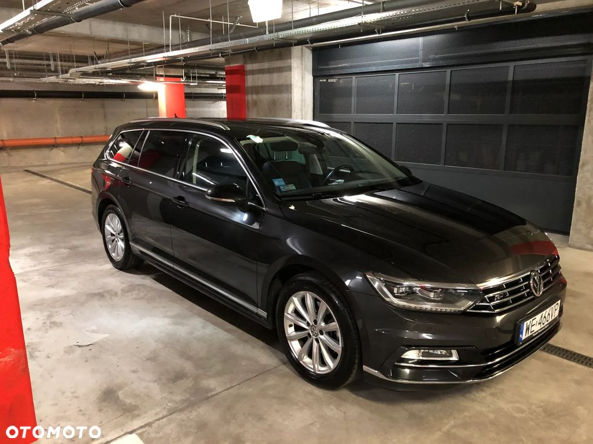
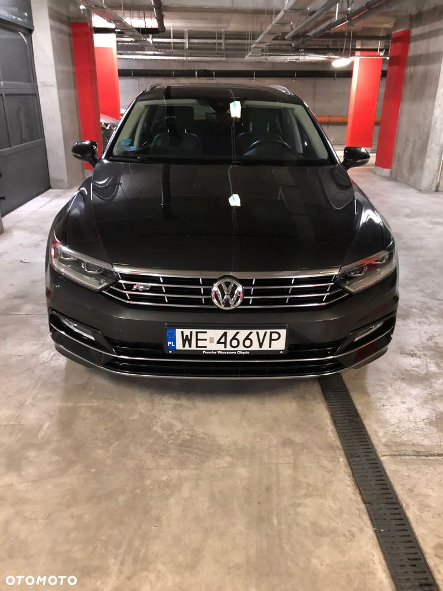
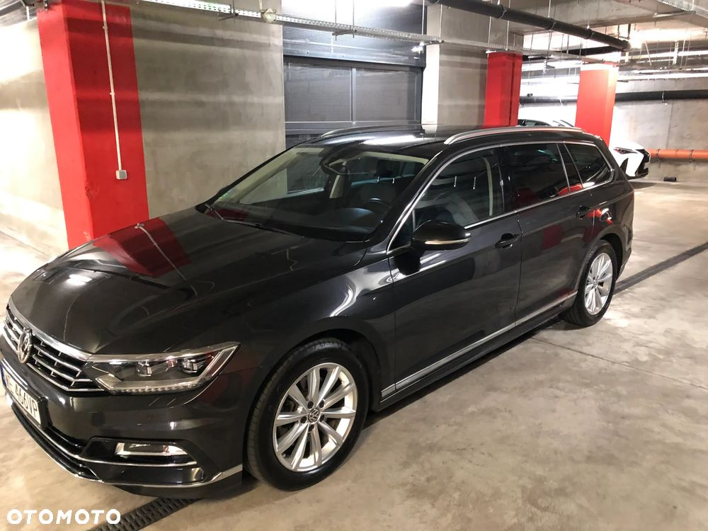
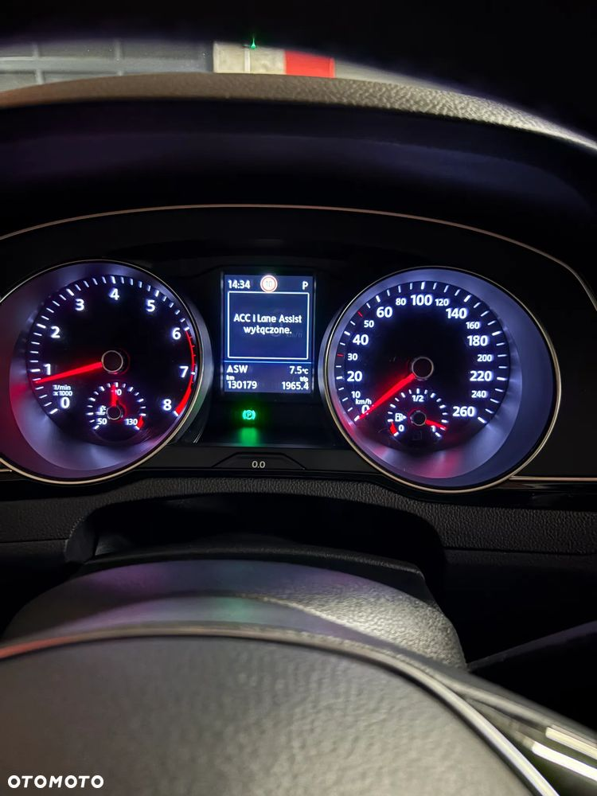
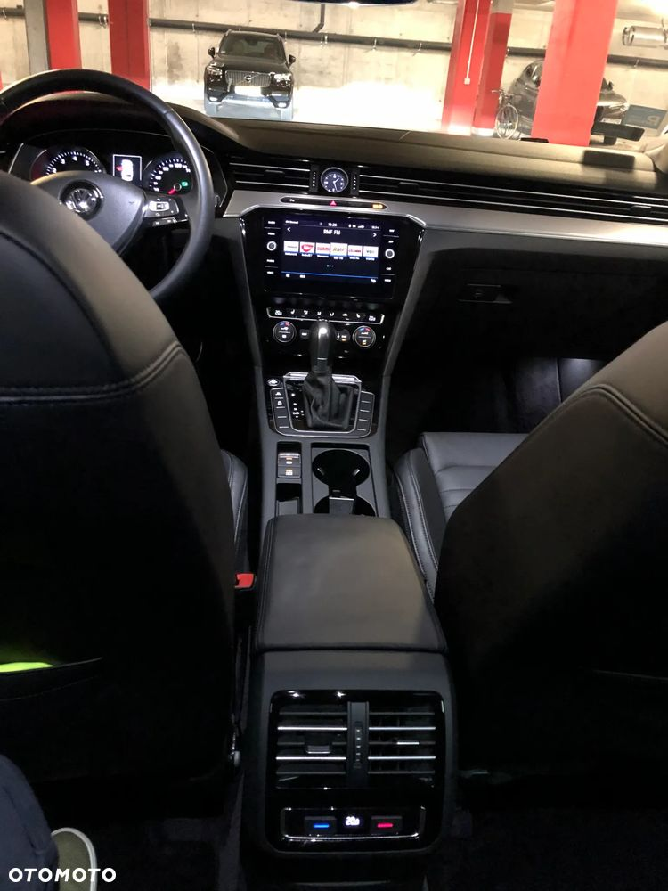
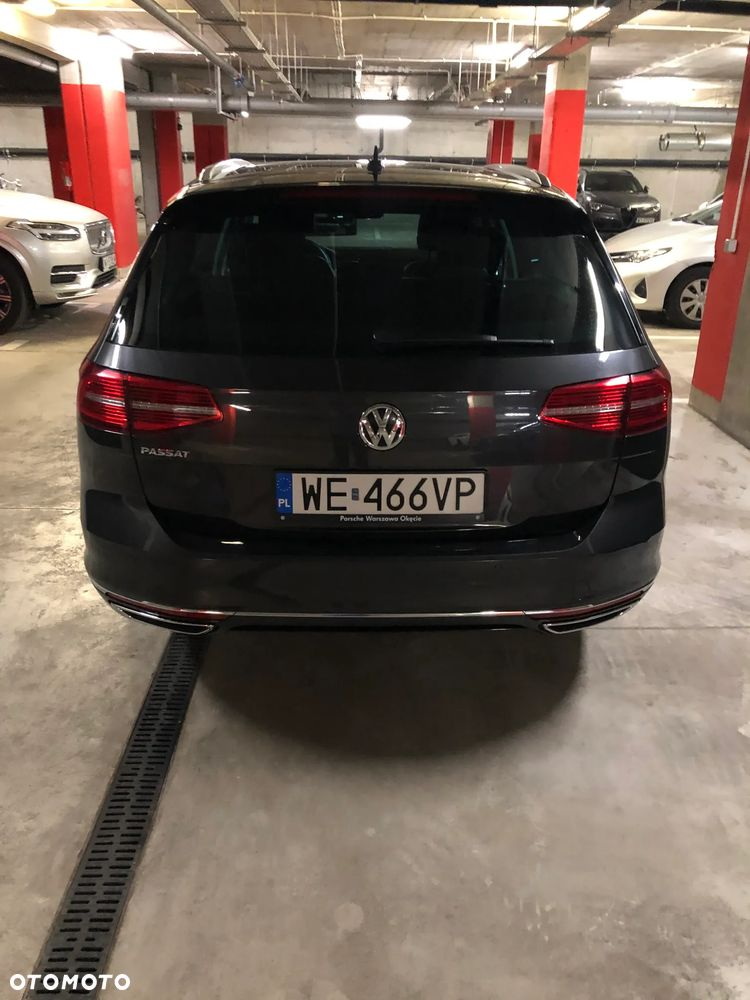
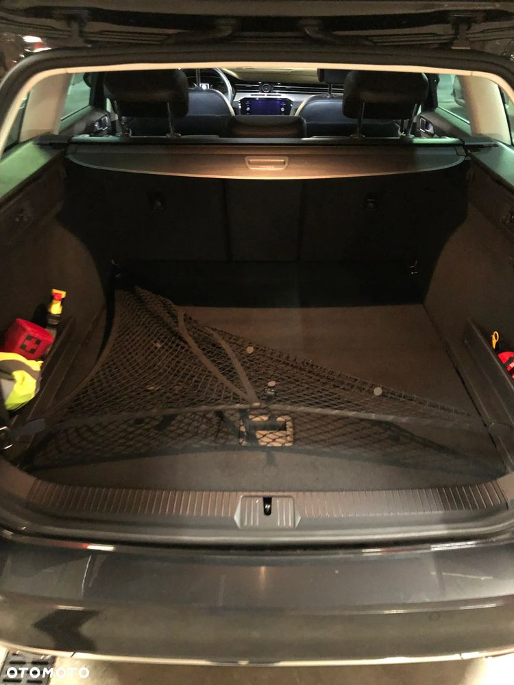
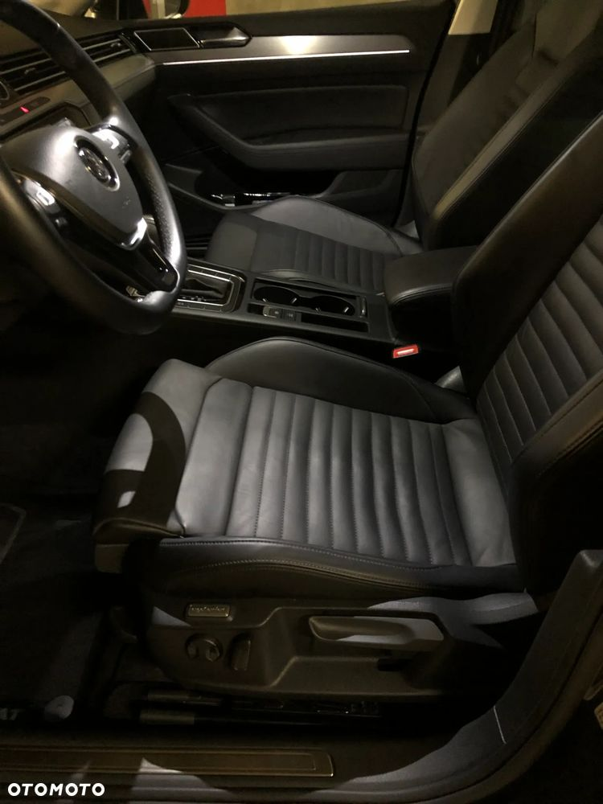
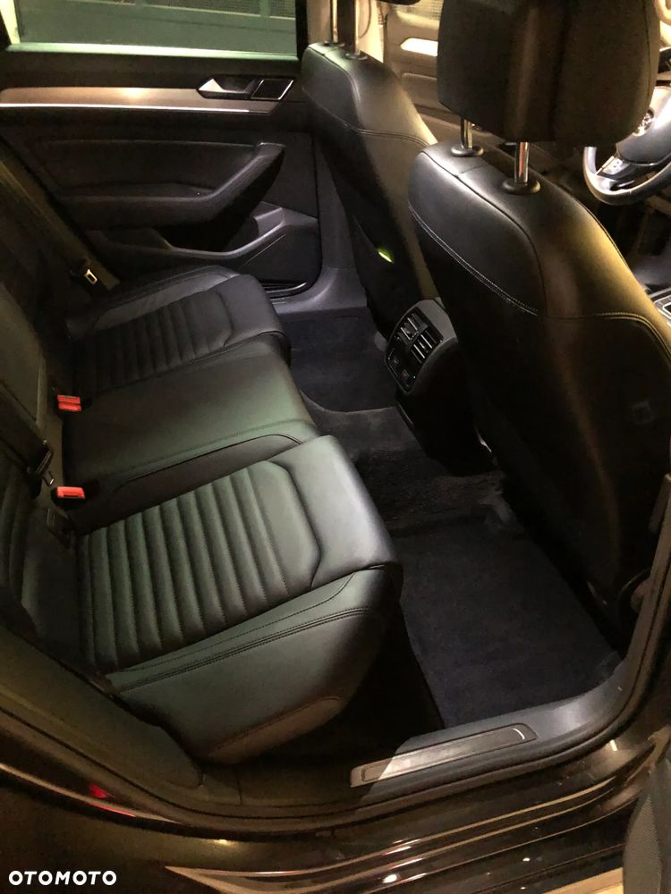
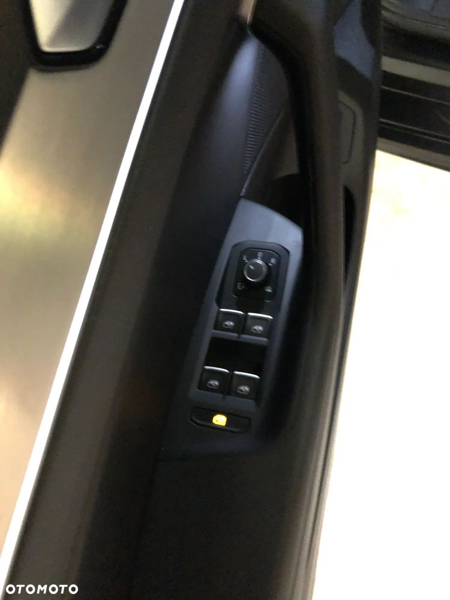
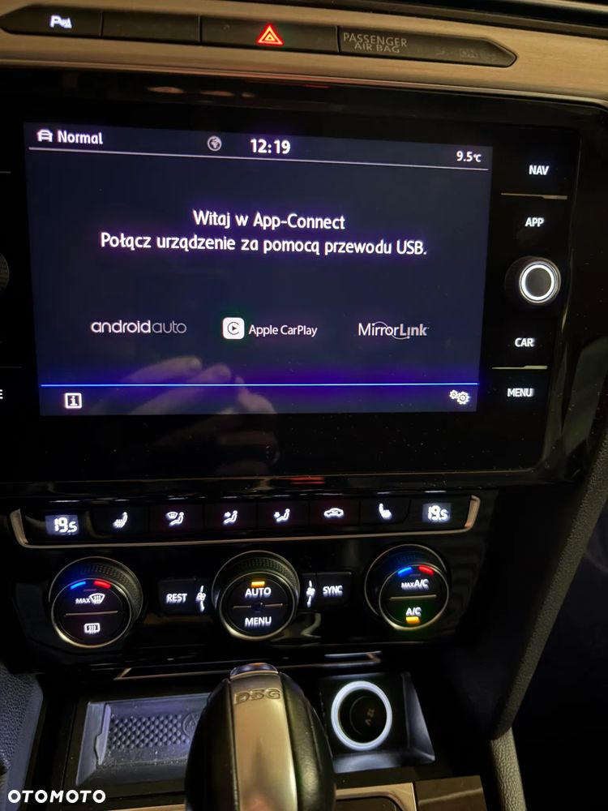